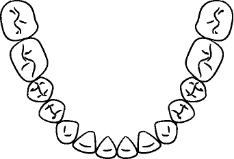

[IV27] - Intraoral Mandibular Occlusal View - Mouth Open, With Mirror But Corrected#

DICOM header for [IV27]#
Attribute Name |
Tag |
Value |
|---|---|---|
Specific Character Set |
(0008,0005) |
ISO_IR 192 |
Image Type |
(0008,0008) |
[‘ORIGINAL’, ‘PRIMARY’] |
SOP Class UID |
(0008,0016) |
1.2.840.10008.5.1.4.1.1.77.1.4 |
SOP Instance UID |
(0008,0018) |
|
Study Date |
(0008,0020) |
20260220 |
Study Time |
(0008,0030) |
203305.542177 |
Accession Number |
(0008,0050) |
|
Modality |
(0008,0060) |
XC |
Manufacturer |
(0008,0070) |
|
Referring Physician’s Name |
(0008,0090) |
Murray^Conrad |
Timezone Offset From UTC |
(0008,0201) |
+0000 |
Study Description |
(0008,1030) |
|
Series Description |
(0008,103e) |
Orthodontic Intraoral Series |
Anatomic Region Sequence |
(0008,2218) |
|
> Code Value |
(0008,0100) |
123851003 |
> Coding Scheme Designator |
(0008,0102) |
SCT |
> Code Meaning |
(0008,0104) |
Mouth region structure (body structure) |
Primary Anatomic Structure Sequence |
(0008,2228) |
|
> Code Value |
(0008,0100) |
88176008 |
> Coding Scheme Designator |
(0008,0102) |
SCT |
> Code Meaning |
(0008,0104) |
Lower dental arch structure (body structure) |
Patient’s Name |
(0010,0010) |
Jackson^Michael |
Patient ID |
(0010,0020) |
X1 |
Patient’s Birth Date |
(0010,0030) |
19580829 |
Patient’s Sex |
(0010,0040) |
M |
File Source |
(0016,003a) |
3 |
Scene Type |
(0016,003b) |
1 |
Study Instance UID |
(0020,000d) |
|
Series Instance UID |
(0020,000e) |
|
Study ID |
(0020,0010) |
000 |
Series Number |
(0020,0011) |
000 |
Instance Number |
(0020,0013) |
000 |
Patient Orientation |
(0020,0020) |
[‘L’, ‘A’] |
Image Laterality |
(0020,0062) |
U |
Image Comments |
(0020,4000) |
IV27^Intraoral Mandibular Occlusal View - Mouth Open, With Mirror But Corrected |
Samples per Pixel |
(0028,0002) |
1 |
Photometric Interpretation |
(0028,0004) |
MONOCHROME2 |
Rows |
(0028,0010) |
233 |
Columns |
(0028,0011) |
342 |
Bits Allocated |
(0028,0100) |
8 |
Bits Stored |
(0028,0101) |
8 |
High Bit |
(0028,0102) |
7 |
Pixel Representation |
(0028,0103) |
0 |
Quality Control Image |
(0028,0300) |
NO |
Burned In Annotation |
(0028,0301) |
NO |
Lossy Image Compression |
(0028,2110) |
|
Acquisition Context Sequence |
(0040,0555) |
|
> Value Type |
(0040,a040) |
CODE |
> Concept Name Code Sequence |
(0040,a043) |
|
>> Code Value |
(0008,0100) |
ZZZZZZ |
>> Coding Scheme Designator |
(0008,0102) |
DCM |
>> Code Meaning |
(0008,0104) |
Orthognathic Functional Conditions |
> Concept Code Sequence |
(0040,a168) |
|
>> Code Value |
(0008,0100) |
262016004 |
>> Coding Scheme Designator |
(0008,0102) |
SCT |
>> Code Meaning |
(0008,0104) |
Open mouth (finding) |
> Value Type |
(0040,a040) |
CODE |
> Concept Name Code Sequence |
(0040,a043) |
|
>> Code Value |
(0008,0100) |
128741 |
>> Coding Scheme Designator |
(0008,0102) |
DCM |
>> Code Meaning |
(0008,0104) |
Longitudinal Temporal Event Type |
> Concept Code Sequence |
(0040,a168) |
|
>> Code Value |
(0008,0100) |
126074 |
>> Coding Scheme Designator |
(0008,0102) |
DCM |
>> Code Meaning |
(0008,0104) |
Posttreatment |
> Measurement Units Code Sequence |
(0040,08ea) |
|
>> Code Value |
(0008,0100) |
d |
>> Coding Scheme Designator |
(0008,0102) |
UCUM |
>> Code Meaning |
(0008,0104) |
day |
> Value Type |
(0040,a040) |
NUMERIC |
> Concept Name Code Sequence |
(0040,a043) |
|
>> Code Value |
(0008,0100) |
128740 |
>> Coding Scheme Designator |
(0008,0102) |
DCM |
>> Code Meaning |
(0008,0104) |
Longitudinal Temporal Offset from Event |
> Numeric Value |
(0040,a30a) |
234.0 |
Device Sequence |
(0050,0010) |
|
> Code Value |
(0008,0100) |
47162009 |
> Coding Scheme Designator |
(0008,0102) |
SCT |
> Code Meaning |
(0008,0104) |
Mirror, device (physical object) |
View Code Sequence |
(0054,0220) |
|
> Code Value |
(0008,0100) |
260499007 |
> Coding Scheme Designator |
(0008,0102) |
SCT |
> Code Meaning |
(0008,0104) |
Occlusal projection (qualifier value) |
> View Modifier Code Sequence |
(0054,0222) |
|
>> Code Value |
(0008,0100) |
787610003 |
>> Coding Scheme Designator |
(0008,0102) |
SCT |
>> Code Meaning |
(0008,0104) |
Photographic image corrected intraoral mirrored visible record ( |